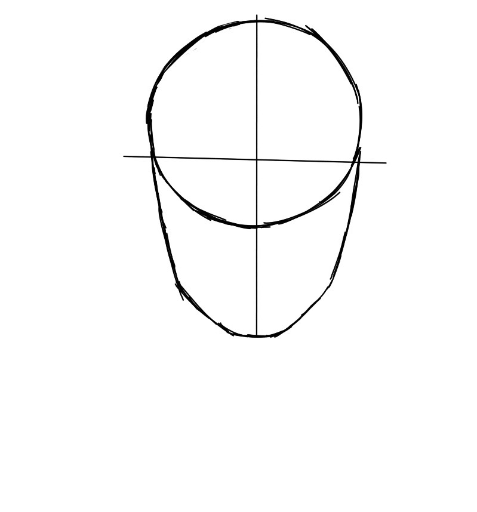

FRONT VIEW

This Tutorial will teach you the basics on how to draw the front view of the face. It is a step by steo by step in-dept tutorial, that teach you all the way from the basic shape of the face to the shading and details.
STEP 1:
Draw a circle which takes up less than half of the area in which the face will cover. This circle is the top of the head where the brain is.
STEP 2:

Next draw the rest of the basic shape of the head. This is the bottom half of the head where the jaw and chin is. Make sure it does not appear as a smooth oval, because the human jaw has more edges and dimensions. Ofcourse, this also depends on the type of person you are drawing.
STEP 3:
Now draw to lines intersecting each other across the face. These lines will be the guidelines as to where the facial features go. after drawing these line draw for more lines. These line will determine where the eyes will go.
STEP 4:
Draw the eyes using the outline created in the previous step. Make sure the eyes are an almond shape and not an oval. Also include the pupals wich are about a 1/3 size of the eye.
STEP 5:
Now draw the other facial features including the nose and mouth. using the circle underneath as a guidline, draw the nose just below it. Now Draw the lips just below the nose leaving distance for the moustache area.
STEP 6:
Next Draw the neck and soldies. The nick is the same width as the jaw, and the sholders are about two to three head apart.
STEP 7:
Now remove the structure lines to get a basic shape of the head.
STEP 8:
Shade based on where the light source is coming from. In this case the light source is coming from the top left. Keep in mind that the face is not flat, and that it has cheekbones and other prominent features. To learn more about shading refer to the forms in the Fundamentals of art.
STEP 9:
Finally, when you have the basic idea of where the shadows are. Shade! Make sure to include midtones, refering to value from the elements of art.